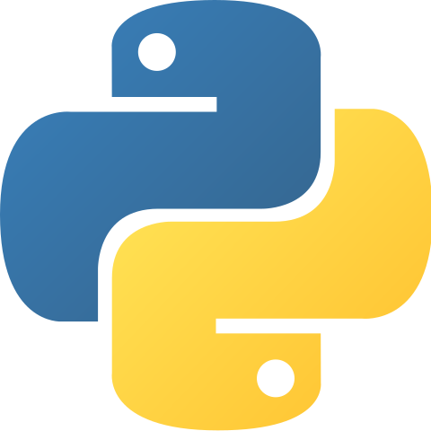
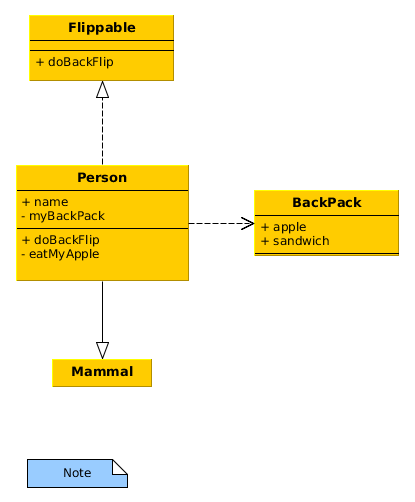
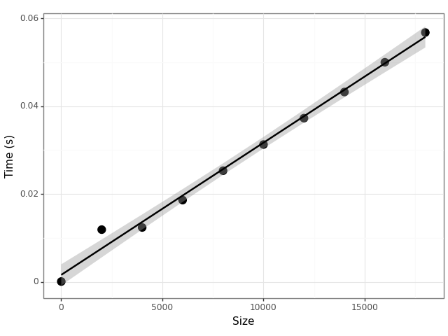

Python notes

Table of Contents
Python notes
Syntax
Type hints
def my_function(x: int, y: float) -> float:
return x + y
my_functionhas typeCallable[[int, float], float]- either types, e.g.
int | floatorUnion[int, float] - maybe types, e.g.
int | NoneorOptional[int] NewTypefrom thetypingmodule allows you to create distinct type, e.g.NewType("MyInt", int)will work like anintby as far as the type checker is concerned, it is a different type.Literalis used to indicate an enumeration of potential values. (There is aEnumtype, but it seems to be more strict.)
Dataclasses
In this example, because the dataclass if frozen, you could not add a melon to this fruit bowl. See the dataclass docs for details.
from dataclasses import dataclass
@dataclass(frozen=True)
class FruitBowl:
"""A bowl of three types of fruit"""
location: str = "Kitchen"
num_apples: int
num_bananas: int
num_kiwi: int
def total_fruit(self) -> int:
return self.num_apples + self.num_bananas + self.num_kiwi
Assertions
assert 1 == 1
assert 1 == 1, "mathematics is a lie!"
In the second example we include an error message that will be shown if the assertion fails.
Dictionary
my_dict = {"foo": 1, "bar": 'a'}
Dictionaries have a get(key[, default]) method which access a value
and provides a default if it is missing.
List comprehension
[f(x) for x in xs if p(x)]
Keyword arguments
def my_function(**kwargs):
for key, value in kwargs.items():
print(f"{key}: {value}")
kwargs is a dictionary
Case/switch statements
Taken from the documentation.
def http_error(status):
match status:
case 400:
return "Bad request"
case 404:
return "Not found"
case 418:
return "I'm a teapot"
case _:
return "Something's wrong with the internet"
Case/switch statements with pattern matching
Taken from the documentation.
match point:
case Point(x, y) if x == y:
print(f"Y=X at {x}")
case Point(x, y):
print(f"Not on the diagonal")
Loops
The use of the continue keyword will cause the iteration with i=1
to be skipped and the loop will move straight to the next iteration.
This will work with a while-loop too.
for i in range(5):
if i == 3:
continue
print(i)
Object oriented programming
UML design and Python implementation

Figure 1: Example of a UML class diagram
from abc import ABC, abstractmethod
class Mammal:
def __init__(self, name):
self.name = name
class Flippable(ABC):
@abstractmethod
def doBackFlip(self):
pass
class Person(Mammal, Flippable):
def __init__(self, name):
super().__init__(name)
self.backpack = Backpack()
def doBackFlip(self):
print(f"{self.name} did a backflip!")
def checkForApple(self):
return self.backpack.checkForApple()
def eatApple(self):
if self.backpack.getApple():
print(f"{self.name} ate an apple!")
else:
print(f"{self.name} has no apples to eat!")
class Backpack:
def __init__(self):
self.content = ['apple', 'sandwich']
def checkForApple(self):
return "apple" in self.content
def getApple(self):
if self.checkForApple():
self.content.remove("apple")
return "apple"
return None
def main():
john = Person("John")
john.doBackFlip()
if john.checkForApple():
john.eatApple()
john.eatApple()
if __name__ == "__main__":
main()
Pip
To install a package from source
pip install <package> -e <path/to/source>
PIP VANISHED!!!
If you get a weird message about pip not being there you can try running
python3 -m ensurepip. I do not understand why pip vanished but this brought it
back.
Help
There is the function help which you can give an object and it will attempt to
provide some information about the class of the object. You can also get a list
of the attributes of an object with the .__dir__() method.
Debugging
There is a built-in debugger, pdb, which can be included with the
following commands.
import pdb; pdb.set_trace()
See my emacs configuration for details on how to use a nice front-end for this.
TODO Functional programming
- Python 3.10 supports structural pattern matching!
- Python 3.5 supports type hints!
- Functional Programming HOWTO
- You can create overloaded functions using the
functools.singledispatch. - See my notes on type hints.
High performance computing
Example: Running CPU-bound tasks in parallel
The following example is modified from this example in the Python documentation. It demonstrates how using a process pool allows you to run CPU-bound tasks in parallel. The results will be returned out of order because they are returned in the order the finished (as far as I can tell).
import concurrent.futures
import math
PRIMES = [
112272535095293,
112582705942171,
112272535095293,
115280095190773,
115797848077099,
1099726899285419]
def is_prime(n):
if n < 2:
return (n, False)
if n == 2:
return (n, True)
if n % 2 == 0:
return (n, False)
sqrt_n = int(math.floor(math.sqrt(n)))
for i in range(3, sqrt_n + 1, 2):
if n % i == 0:
return (n, False)
return (n, True)
def main():
is_serial = True
if is_serial:
for number, prime in [is_prime(p) for p in PRIMES]:
print('%d is prime: %s' % (number, prime))
else:
with concurrent.futures.ProcessPoolExecutor() as executor:
futures = [executor.submit(is_prime, p) for p in PRIMES]
for f in concurrent.futures.as_completed(futures):
number, prime = f.result()
print('%d is prime: %s' % (number, prime))
if __name__ == '__main__':
main()
Example: Using python to run a queue of processes
from concurrent.futures import ThreadPoolExecutor
import subprocess
def run_commands_in_parallel(parameters, command_template, max_workers=4):
"""
Executes a command in parallel over a set of parameters.
Args:
- parameters (List[Any]): A list of parameters to format the command with.
- command_template (str): The command string template, expecting a single parameter for formatting.
- max_workers (int, optional): The maximum number of concurrent workers. Defaults to 4.
Raises:
- subprocess.CalledProcessError: If a command fails to execute successfully.
"""
def run_command(parameter):
cmd = command_template.format(parameter)
subprocess.run(cmd, shell=True, check=True)
with ThreadPoolExecutor(max_workers=max_workers) as executor:
executor.map(run_command, parameters)
# Example usage
filenames = ["foobar1.xml", "foobar2.xml", "foobar3.xml"]
command = "<some/command/taking/a/file> {}"
run_commands_in_parallel(filenames, command)
Example: Timing statement execution
Figure 2 is produced by the following snippet which
demonstrates how to use the timeit module (which is part of the
standard library).

Figure 2: The computational cost of adding up the numbers in a list grows linearly with the size of the list.
import timeit
import pandas as pd
import plotnine as p9
def demo(n):
return sum(range(n))
vals = [
{"n": 2*k,
"time": timeit.timeit(lambda: demo(10*k), number=100)}
for k in range(1, 10000, 1000)]
df = pd.DataFrame(vals)
p = (p9.ggplot(df, p9.aes(x="n", y="time")) +
p9.geom_point(size = 4) +
p9.geom_smooth(method="lm") +
p9.labs(x = "Size", y = "Time (s)") +
p9.theme_bw())
p.save("foo.png")
IO
Pickle
The pickle library provides a simple way to save Python objects to
disk. Since pickle is a binary format, you need to have the b in the
file format.
import pickle
obj = {'foo': 'bar'}
with open('demo.pkl', 'wb') as f:
pickle.dump(obj, f)
with open('demo.pkl', 'rb') as f:
obj = pickle.load(f)
Working with JSON
import json
with open('foo.json', 'r') as f:
d = json.load(f)
with open('bar.json', 'w') as f:
json.dump(d, f, indent=4)
Virtual environments
There are two main tools for python specific virtual environments: venv (super light weight) and conda (heavy weight).
venv
python3 -m venv venv
source venv/bin/activate
pip install -U pip # update pip
pip install -r requirements.txt
deactivate
To save a copy of the packages in an environment you can use freeze
them to a requirements file. This records the exact versions of the
packages which makes it easy to recreate the environment later.
pip freeze > requirements.txt
Conda
You can install Conda with Miniconda. By default this is a bit aggressive — it will activate conda when it starts a new shell — but you can stop it activating in a new shell with the following
conda config --set auto_activate_base false
Listing existing Conda environments
conda env list
Creating/removing a Conda environment
conda create -n myenv python=3.10
This created an environment in ~/miniconda3/envs/myenv. If you want
to remove this later, this can be managed by Conda too.
conda env remove -n myenv
To remove old caches there is conda clean --all.
Activating/deactivating a Conda environment
conda activate myenv
conda deactivate
Installing Snakemake in Conda
conda install -c bioconda -c conda-forge snakemake
I have had issues with PuLP in the past, installing snakemake with the following command instead seemed to fix things.
conda install -c conda-forge -c bioconda --force-reinstall coincbc pulp snakemake
Exporting/recreating a Conda environment
conda env export > environment.yaml
conda env create -f environment.yaml
If you want to update an existing environment to match those in a
environment.yaml,
conda env update -n myenv -f environment.yml
Conda Examples
Example: Recording the environment
rule conda_environment:
output:
"config/environment.yaml"
shell:
"conda env export > config/environment.yaml"
Python packages
For notes on installation of packages see the notes above about pip or virtual environments.
argparse
The argparse module is part of the standard library.
import argparse
# create parser object
parser = argparse.ArgumentParser()
parser.add_argument(
"-v",
"--verbose",
action="store_true",
default=False,
help="Verbose output"
)
parser.add_argument(
"-s",
"--seed",
type=int,
default=1,
help="PRNG seed"
)
parser.add_argument(
"-p",
"--parameters",
type=str,
help="Filepath to parameters JSON"
)
args = parser.parse_args()
Biopython
See my notes here.
h5py
- This package is a wrapper around the HDF5 (hierarchical data format) C library.
pip install h5py- "Groups work like dictionaries, and datasets work like NumPy arrays"
- You can pull values out of a group using the same syntax as for a
dictionary. E.g. there is a
.keys()method to get a list of all the keys in a database. There is acreate_groupmethod to create new groups within an object. - A dataset has a
shapeand adtype. There is acreate_datasetmethod to create new datasets within an object.
- You can pull values out of a group using the same syntax as for a
dictionary. E.g. there is a
Example: Getting data using full paths
As described in the Quick start guide, there is a simple way to pull out data:
f = h5py.File('mydataset.hdf5', 'a')
dset3 = f.create_dataset('subgroup2/dataset_three', (10,), dtype='i')
dataset_three = f['subgroup2/dataset_three']
Note that this demonstrates you do not need to explictly create parent groups in order to create child groups. Having HDFCompass open is useful while writing these queries.
logging
Here is a minimal example of how to use the logging package.
import logging
LOG_DIR = Path(".logs")
LOG_DIR.mkdir(exist_ok=True)
LOG_FILE = LOG_DIR / f"browse-epidemiological-data-{pd.Timestamp.now().strftime('%Y%m%d-%H%M%S')}.log"
logging.basicConfig(
level=logging.INFO,
format="%(asctime)s | %(levelname)s | %(name)s | %(message)s",
handlers=[logging.FileHandler(LOG_FILE)],
)
logging.info("Logging initialized.")
OS
The os module (in the standard library) is a nice way to interact
with the operating system. There are functions to manage the working
directory:
os.getcwd()os.chdir(path)
os.path has helpful functions for working with the file system:
os.path.dirname(path)os.path.basename(path)os.path.exists(path)
PyYAML
Reading YAML Files
import yaml
with open('config.yaml', 'r') as file:
config = yaml.safe_load(file)
Writing YAML Files
data = {
'name': 'Clark Evans',
'features': ['YAML']
}
with open('output.yaml', 'w') as file:
yaml.dump(data, file)
PyTorch
Useful functions: lattice data
torch.nn.MaxPool2d- applies max pooling
- =torch.nn.Conv2d
- applies a convolution
There is "2d" in these functions, but there is also one and three dimensional alternatives.
Useful functions: tensor manipulation
torch.flatten- reshapes a tensor
torch.ones- creates a tensor of ones
torch.zeros- creates a tensor of zeros
Saving and loading models
# first train `my_cool_model'
torch.save(my_cool_model.state_dict(), "./demo.pt")
another_cool_model = CoolModel()
another_cool_model.load_state_dict(torch.load("./demo.pt"))
Snakemake
See my snakemake notes.
tqdm (progress bars)
import tqdm
import time
print("starting loop...")
for x in tqdm.tqdm(range(10)):
time.sleep(1)
print("done.")
Unittest
Common assertions
Here is a table of common assertions from the docs.
| Method | Means |
|---|---|
assertEqual(a, b) |
a == b logical equal |
assertNotEqual(a, b) |
a != b |
assertTrue(x) |
bool(x) is True |
assertFalse(x) |
bool(x) is False |
assertIs(a, b) |
a is b |
assertIsNot(a, b) |
a is not b |
assertIsNone(x) |
x is None |
assertIsNotNone(x) |
x is not None |
assertIn(a, b) |
a in b |
assertNotIn(a, b) |
a not in b |
assertIsInstance(a, b) |
isinstance(a, b) |
assertNotIsInstance(a, b) |
not isinstance(a, b) |
assertAlmostEqual(a, b, places=n) |
Approximate equality |
Example
There is a built-in unit testing library for Python. The following
code runs with python demo.py.
Any methods with a name starting with "test" are run and there are
setUp and tearDown methods.
import unittest
import scipy.stats as stats
import numpy as np
class TestScipyStats(unittest.TestCase):
def setUp(self):
self.test_data = np.array([1, 2, 3, 4, 5])
def test_mean(self):
# use assertAlmostEqual to check 7 (default) decimal places
self.assertAlmostEqual(np.mean(self.test_data), 3.0, 7)
def test_min_max(self):
self.assertEqual(np.min(self.test_data), 1)
self.assertEqual(np.max(self.test_data), 5)
def test_bogus(self):
with self.assertRaises(AttributeError):
self.test_data.fake()
if __name__ == '__main__':
unittest.main()
Pypfilt
Plotnine
Numpy
Notes
- The
ndarrayis the core data type, it consists of n-dimensional homogeneous arrays of a fixed size.- The
ndimmethod tells you the dimension of the array. - If
aisnp.array([1,2,3]), thena.shapewill be(3,)and botha[:,np.newaxis]anda.reshape((3,1))will be a(3,1)column vector.
- The
- Broadcasting is the implicit use of element-wise operations which means that the code is vectorised by default.
- Numpy expects an iterable for array construction when using
np.array. - Arithmetic operations are all performed element-wise. So are logical operations.
- Universal functions such as the exponential, and trigonometric functions apply element-wise.
- Python has zero-based indexing:
a[2]gives the third element.- In the multidimensional case
a[i,j]is the same asa[(i,j)].
- In the multidimensional case
- The colon is used to take a slice through a dimension. Trailing, unspecified dimension values are treated as slices.
- Assignment and function call do not copy the array.
- The
viewmethod of an array creates a view. - Slicing an array returns a view, not a copy.
- The
copymethod of an array creates a copy. You need to explicitlydel my_arrayto free memory though. - There are all the functions and methods you would expect for arrays.
- To write and read data from CSV, numpy provides the
savetxtandloadtxtfunctions.
Comparison with R
| Python | R |
|---|---|
np.linspace(a, b, num = 10) |
seq(from = a, to = b, length = 10) |
np.array([x1, x2, x3]) |
c(x1, x2, x3) |
a1 * a2 |
a1 * a2 |
a1 @ a2 |
a1 %*% a2 |
np.vstack((a1, a2)) |
rbind(a1, a2) |
a.transpose() |
t(a) |
Pandas
Pandas is an attempt to bring R-style data frames to python. There is a comparison with R in the quickstart guide.
| R | pandas |
|---|---|
abs(x) |
x.abs() |
diff(x) |
x.diff() |
mean(x, na.rm=TRUE) |
x.mean() |
import pandas as pdand importSeriesandDataFrameinto the global namespace since these will be used a lot in pandas work.Seriesare indexed arrays and you can provide your own indices. The indices can be used to select elements of the array or you can treat the whole array as a numpy array. A dictionary with values of a single type can be used as data to construct aSerieswith the keys as the indices.DataFrameinstances can be constructed by passing in a dictionary or lists of equal length. There is one index list for each axis of the dataframe. Columns can be modified or created by assignment.- Indexing into a dataframe returns a view so any modification of that result will also modify the original dataframe. To avoid this you need a copy for which there is a method provided.
- There is a
dropmethod for removing elements of series and dataframes. - There are summary statistics, which take an
axisargument to specify which axis to apply them to. - The
indexof a data frame in pandas is the row labels of R.
- Beware the difference between views and copies of data when using pandas.
There is the
copymethod to help you a lot of the time.
Group summary
df_summary <- df |>
group_by(group_var) |>
summarise(mean_x = mean(diff(x), na.rm=TRUE))
df_summary = (
df
.groupby("group_var")
.agg(mean_x=("x", lambda x: x.diff().mean()))
)
Reshaping (melting) data
Dataframes have a melt method to go from a wide to long format.
sales_melted = sales.melt(id_vars=['Year'],
value_vars=['product_a', 'product_b', 'product_c'],
var_name='Product',
value_name='Sales')
id_varsare the columns you want to keep as an identifier;value_varsare the columns you want to melt into rows;var_nameis the column name of the new variable created;- and
value_nameis the column name of the existing values.
Melting is particularly useful in plotting.
IO
- Reading in data with
pd.read_csvandpd.read_tablethere is ato_csvmethod. There are similar methods for_jsonin newer versions of pandas.
import pandas as pd
df = pd.DataFrame({
"id": [1, 2, 3, 4],
"val": ['a', 'b', 'c', 'd']
})
df[0:2].to_csv('demo-pandas-csv.csv', index=False)
# NOTE this appends the data to the end of the CSV.
df[2:4].to_csv('demo-pandas-csv.csv', index=False, mode='a', header=False)
id,val
1,a
2,b
3,c
4,d
Munging
The pandas data frame has a rename method to rename the columns:
my_df.rename(columns={"old_name_1": "new_name_1",
"old_name_2": "new_name_2"})
Exploratory data analysis
- A combination of the
describe,infoanddtypesmethod provide an acceptable replacement for thestrandsummaryfunctions from R. - The
columnsmethod returns an array of the column names. - There is a
quantilemethod on Series which takes an iterable of probabilities to evaluate the quantiles at.
Cross tabulation
Assume `df` has columns `discretea` and `discreteb`, then the following will cross tabulate the number of each pair.
pd.crosstab(df.discrete_a, df.discrete_b)
- The
.value_countsmethod is the same as thetablefunction from R. If you just want the unique values there is theuniquemethod. A notable extension ofvalue_countsis thecrosstabfunction which returns a table with the value count across multiple variables. Both the cross and regular tables are data frames themselves and can be used in subsequent calculations.
Filtering by column values
Given a data frame, `gapminder`, with a column called `year` the following will select only the rows corresponding to the year 2002.
gapminder_not_2002 = gapminder[gapminder.year != 2002]
Note that you might want to use a copy of `gapminder` here as this appears to only return a view of the data.
Matplotlib
Jupyter
To get this working in a jupyter notebook you'll need the following at the head of the first cell pretty much.
%matplotlib inline
import matplotlib.pyplot as plt
There are standard functions: scatter; plot, which appears to be for lines; and hist. Legends need to be added seperately.
Random notes
- You want to use the pyplot interface:
import matplotlib.pyplot as plt. - You create a figure object first:
fig = plt.figure() - You create an axes object from the figure object:
ax = fig.add_axes([0.1,0.1,0.8,0.8]) - If you want to draw multiple subplots there are methods to generate multiple axes.
- The axes object has all sorts of methods to draw different geometric objects.
There is a
plotmethod for basic lines and points, but there are other methods, egbarandtextto draw other things. - You show the figure with
plt.show(), or you can save it with theplt.savefig()method.
Requests/lxml
Example: Getting a list of references from an article
import requests
from lxml import html
The request information I got from the Network tab in Inspect (Firefox) after looking for a request that returned HTML and looking at the response to see it did include the references.
url = "https://doi.org/10.1371/journal.pcbi.1009805"
headers = {
"Accept": "text/html,application/xhtml+xml,application/xml;q=0.9,image/avif,image/webp,*/*;q=0.8",
"Accept-Language": "en-GB,en;q=0.5",
"User-Agent": "Mozilla/5.0 (X11; Ubuntu; Linux x86_64; rv:122.0) Gecko/20100101 Firefox/122.0",
}
The request returns the HTML for the whole page, but the references
are in an ol with the class references so with XPath (via lxml)
we can filter out this information.
response = requests.get(url, headers=headers)
if response.status_code == 200:
tree = html.fromstring(response.content)
xpath = "//ol[@class='references']"
ordered_list = tree.xpath(xpath)
if ordered_list:
print(html.tostring(ordered_list[0], pretty_print=True).decode())
else:
print("Ordered list not found in the HTML.")
else:
print(f"Failed to retrieve data: Status code {response.status_code}")
Statsmodels
Where the Pandas package provides R-style data frames in python, the Statsmodels attempts to provide all of the statistics functionality of R (primarily regression functions). The standard import statements for using Statsmodels are shown below.
import pandas as pd
import statsmodels.api as sm
import statsmodels.formula.api as smf
There is a module which provides all of the familiar datasets from R. Note that
in this example "Duncan" is the name of the data set which is provided by the
"carData" package. There is a full list available through the module
documentation.
duncan_prestige = sm.datasets.get_rdataset("Duncan", "carData")
print(duncan_prestige.__doc__) # for meta-data
duncan_prestige.data # pandas dataframe
NetworkX
- A node can be any hashable object (importantly it can be a dictionary); the
value of
Noneis reserved to indicate that something is not a node. - A graph
Ghas some properties:G.nodes,G.edges, andG.adj(adjacency pairs). - A graph
Ghas some methods to help with construction:G.add_node(), andG.add_edge(). - There is an Algorithms section to the API containing useful graph algorithms.
Mutating a network
- relabel a node with
networkx.relabel.relabel_nodes
VLC
The following makes use of the python-vlc library to stream radio.
import vlc
import time
# --------------------------------------------------------------------
# For finding more radio stations, you may want to check out websites
# such as Internet-Radio or TuneIn, which offer thousands of free
# online radio stations. Most of these stations provide their
# streaming URL which you can use to listen in your favorite media
# player.
# When you navigate these websites, you typically select a station
# you're interested in and look for an option that says something like
# "play in your own player" or "manual streaming". This usually leads
# to a .pls, .m3u, .asx or .xspf file being downloaded. These files
# contain the actual URL(s) for the stream, and can be opened in a
# text editor to view the stream URL.
# --------------------------------------------------------------------
# BBC World Service
# url = "http://stream.live.vc.bbcmedia.co.uk/bbc_world_service"
# Majestic Jukebox Radio
url = "http://uk3.internet-radio.com:8405/live"
instance = vlc.Instance()
player = instance.media_player_new()
media = instance.media_new(url)
player.set_media(media)
player.play()
# Keep the program running while the radio plays
try:
while True:
time.sleep(1)
except KeyboardInterrupt:
# On Ctrl+C, stop the player and quit
player.stop()
Tooling
Spyder
- Use Tools > Preferences > Python interpretor to set your virtual environment.
- The hamburger menu in the editor allows you to split the panel to show multiple files.
- Use Run > Configuration per file to set the command line arguments for a particular file (if you can't use a terminal…)
Keyboard shortcuts
C i |
Inspect an entities' documentation |
F8 |
Run code analysis |
F9 |
Run current line/region |
F5 |
Run script |
Black
Once you have black installed, just run black src (assuming your
code is in src/).
Jupyter via Nix
nix-shell --command "jupyter lab"
can be run from a directory with the following shell.nix file to start a
jupyter lab server.
# This provides a shell running a jupyter lab server. To start the server run
# the following command
#
# $ nix-shell --command "jupyter lab"
let
jupyter = import (builtins.fetchGit {
url = https://github.com/tweag/jupyterWith;
rev = "10d64ee254050de69d0dc51c9c39fdadf1398c38";
}) {};
ipython = jupyter.kernels.iPythonWith {
name = "python";
packages = p: with p; [ numpy
altair
scipy
pandas
matplotlib ];
};
jupyterEnvironment = jupyter.jupyterlabWith {
kernels = [ ipython ];
};
in
jupyterEnvironment.env
Colab
If you are using Google's Colab to run notebooks, the requests package is
useful for reading files from Github.